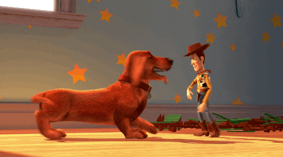
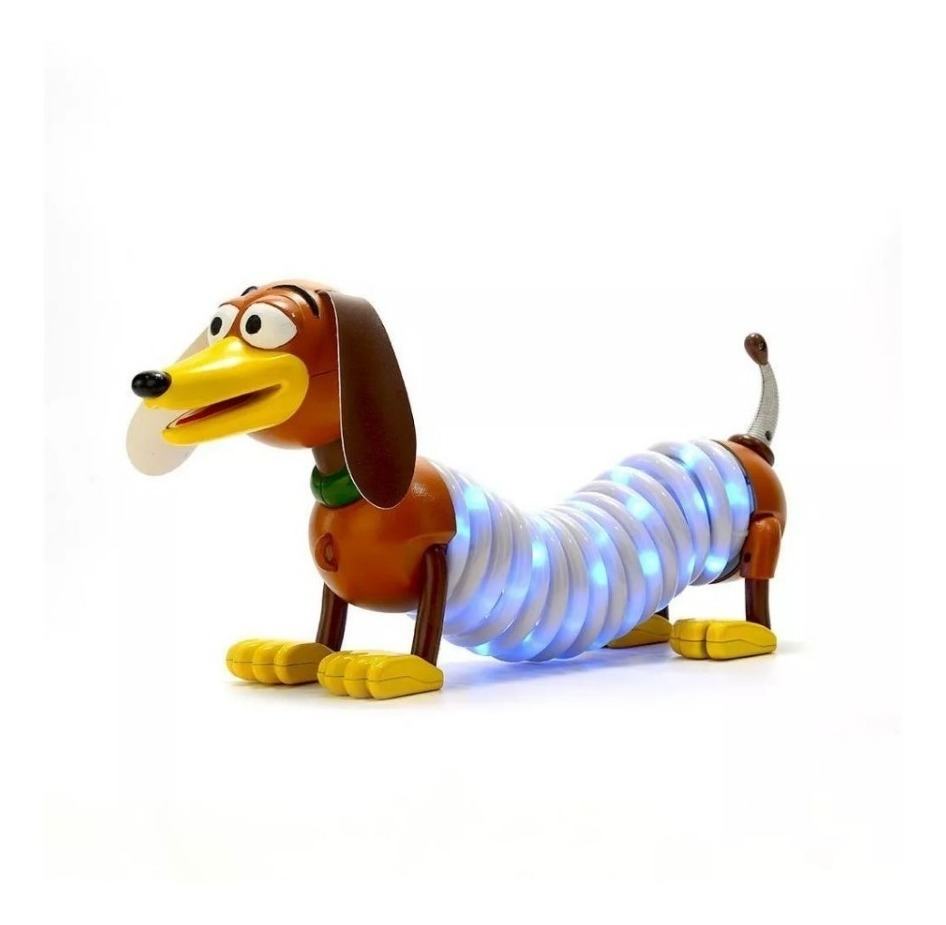
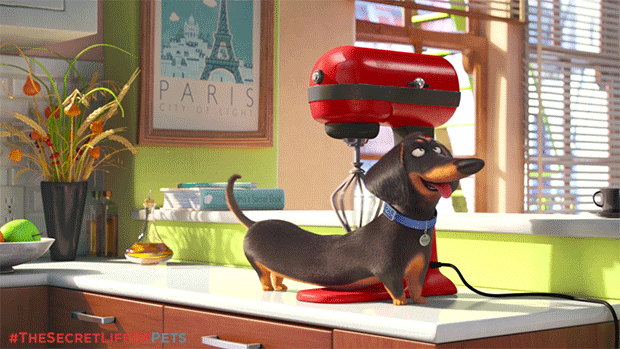

Sabías que...?
...los perros salchichas tienen un día de festejo?
El 1° de febrero se celebra en Argentina el Día Nacional del Perro Salchicha, en conmemoración al natalicio de la escritora, cantante y compositora María Elena Walsh quien escribió una canción a esta raza tan peculiar.
...hay películas donde aparecen perros Dachshund?
-
Toy Story
Buster es el Dachshund de Andy. Es leal, enérgico y le encanta ayudar a Woody.
 -
Toy Story
Slinky es un juguete, pero es uno de nuestros personajes favoritos de Toy Story.

-
Open Season
Mr Weenie de la saga Amigos Salvajes.

-
Pets
Buddy de la película La Vida Secreta de las Mascotas.

Salchiencuentros
Los salchiencuentros se realizan con el fin de interactuar, reunirse y pasar un día con nuestros salchichas. A veces realizamos concursos, de disfraces por ejemplo, también carreras y competencias.